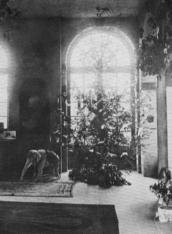
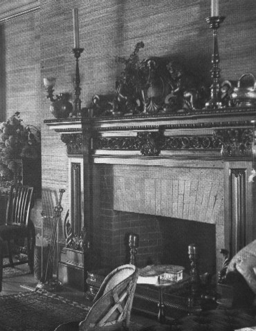

Interior of "Stormfield"


pictures
courtesy of Mark Twain
"We
spend our days in the loggia, which opens out from the living room
& has 8 tall arches & they frame the
scenery & make 8 pictures of it. It is tilepaved, & the fishes [Clemens's
"angelfish"--young girls whom he took as
companions, sort of adopted granddaughters, in his later years] play
diablo & other violent games in it. I think
I will call it the
Fish-Market, for I built it for the fishes. The billiard room is
Aquarium
headquarters, the angel-fishes
are in command there. Their framed photographs hang on the walls." letter
to Margaret Blackmer, 7.7.1908,
Redding,
CT, as quoted in Mark Twain's Angelfish
back
to house exterior